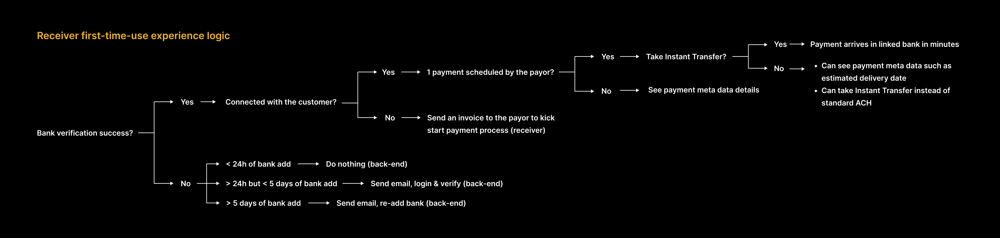
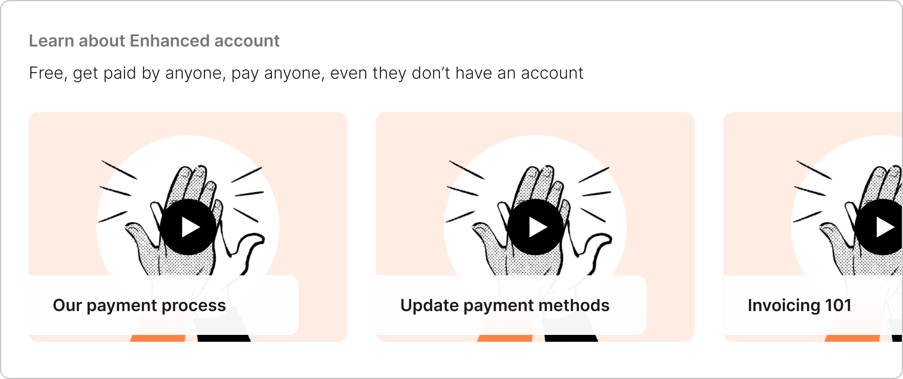
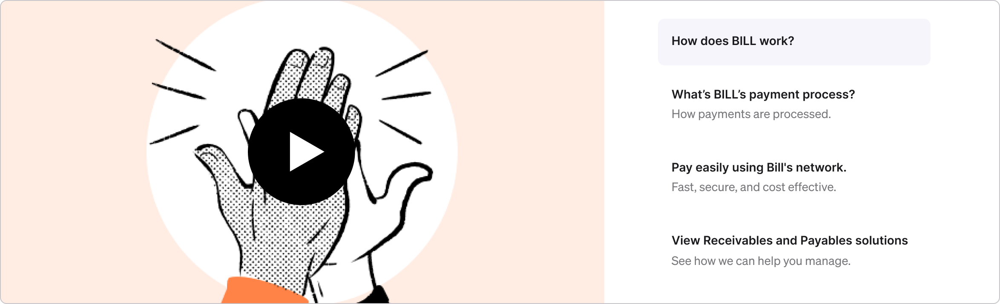
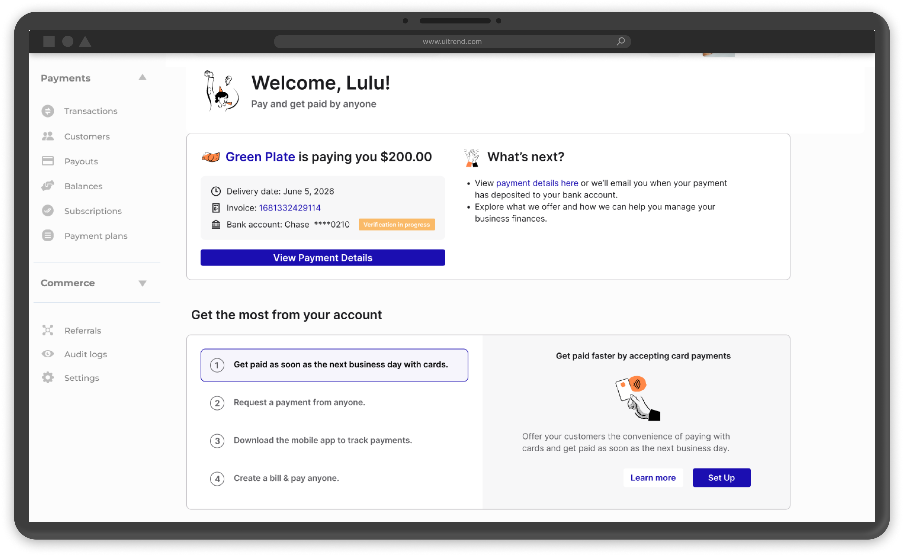
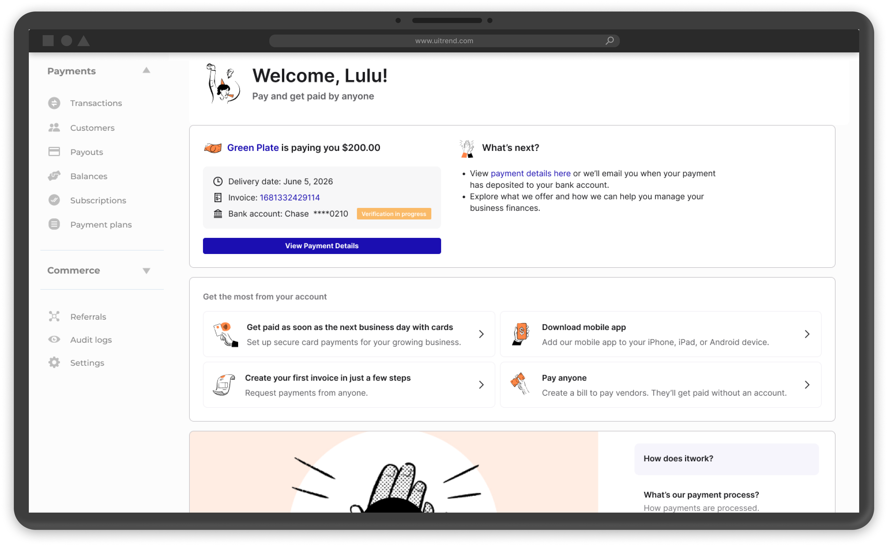
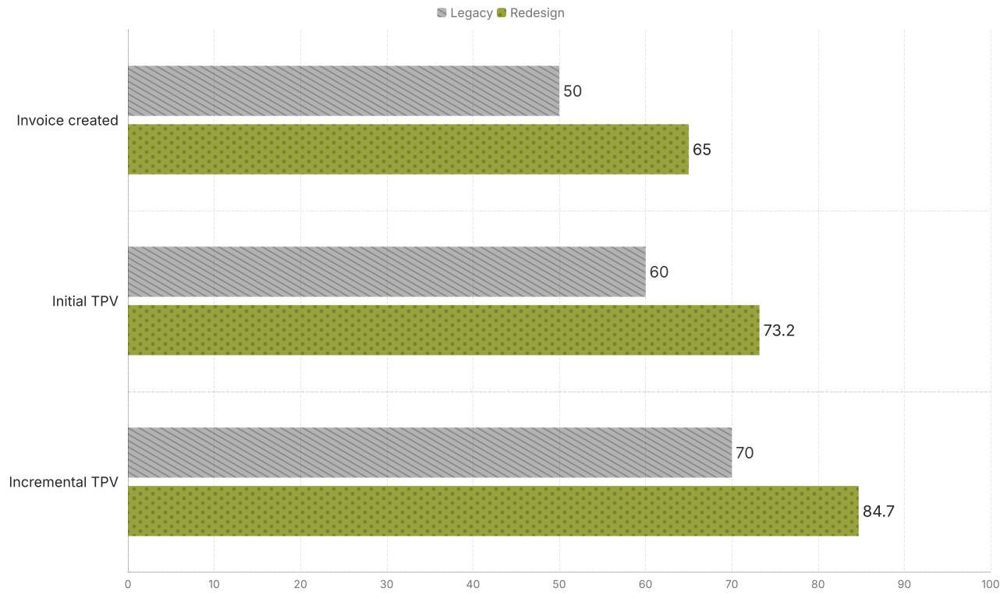

Receiver Onboarding · Network Growth · A/B test
Receiver First-Time-Use Redesign
- Problem:
- Receivers come to the platform with a very narrow first job to be done: get paid by a customer. At the time, the platform had millions of receiver accounts, but only a small fraction were transacting, and most transacting receivers stopped using the platform after three months.
- Design process:
- Design audit → qualitative + survey research → concept in Figma → concept testing → iteration and design lock → launch-ready UX.
- Scope:
- From the moment a customer receives a sign up email to the moment when the fund lands in their linked bank.
- Research:
- A 10-participant qualitative study and a 1,056-respondent survey plus a 10-participant concept testing.
- Hypothesis:
- By redesigning the receiver dashboard to clarify payment status, offer best next steps and explain product value, we will improve receiver activation and retention.
- Team:
- 1 product manager, 1 product designer, 2 researchers, 1 content designer, 2 engineers.
01Context & problem
The platform is a B2B payment network where payors pay receivers, and receivers are asked by payors (their customers) to create a free account in order to get paid. The platform had millions of receiver accounts, but only a small fraction were transacting and most transacting receivers stopped using the platform after three months.
02Three ways to find out why
The first step I took was to go through the receiver experience myself. I created a payor account on our testing platform to pay a fictional receiver. I screenshotted my experience and mapped the journey along the way.
Meanwhile, I partnered with a researcher to look at the problem from both directions. On the qualitative side, we ran a 10-participant study on the receiver journey from signup to first payment: 5 SMBs and 5 independent contractors who had signed up or gotten paid within the prior 30 days. On the quantitative side, we surveyed recently signed-up receivers and received 1,056 responses across solo operators, micro-businesses, SMBs, and a smaller set of larger firms.
I also worked with our customer experience team and sales to look for blockers, such as bank verification failure causing payment delay.
Talk to customers
Qual: 10 interviews;
Quant: survey (1,056 responses)
Map customer journey
Elevate the Peak, fill the Pit, mark the Transition, reorder.
Look for edge cases
From CX support tickets and from talking to Sales.
Payment uncertainty created real emotional drag.
"When I meant cumbersome, there was like a lot of stuff that I knew I didn't need… I don't understand why all this stuff is here, I'm just trying to get paid."
Timing clarity mattered more than feature discovery.
"The biggest challenges are, timing, understanding when a payment is going to be made… It's nice to see a due date but that doesn't mean that that is when we will receive payment."
The payment process itself wasn't intuitive.
"I had gotten a notification on my phone that I have an invoice… I didn't know exactly what that meant."
Receivers don't know what value the platform offers.
A majority of survey respondents said they signed up because a customer asked them to.
No single source-of-truth for payment status, causing them to ask "Where is my money?"
The biggest sources of friction were uncertainty about payment timing, confusion about whether action was required, and a lack of clarity about what the platform was doing on the user's behalf.
Receivers are uncertain about what actions to take after signing up.
Some receivers thought they were receiving a one-time payment and were done.
03Project scope
We decided to redesign the "Get Started" page, where new receivers land to check payment status after signing up.

Problem Statement
How may we clarify payment status, offer best next steps and introduce product value to new receivers after they sign up?
04Design to match real world use cases
Here is how things work in a real world scenario:
- A receiver is asked to create an account to get paid. They sign up, then inform the payor of their PNI (Payment Network ID); the payor connects with them via PNI, creates a bill (from an existing invoice or not) and schedules a payment to the receiver.
- After adding a bank, there could be a bank verification process that asks the receiver to enter a random deposit amount, which requires at least 24h of wait.
- Once the bank is successfully connected, the receiver needs to find their PNI and send it to their payor. The payor needs to first connect with the receiver.
- Right after, if the payor creates a bill, an invoice for this payment will be created and automatically show up in the receiver's Inbox. If the payor schedules a payment, more rich metadata such as Amount, Payor name, Estimated delivery date can be shown on the frontend.
- However, if the payor didn't take action, the receiver can nudge the payor by sending them an invoice about the expected payment in-product to kick start the payment process. The payor will receive the invoice in their Inbox and turn it into a bill from there.
Multiple layers of variables create the complexity.
First, whether there's an in-flight payment changes what to show. Receivers with an incoming payment are concerned with when and where the fund will land. Receivers with no in-flight payment wonder how to kick start the payment process.
Another layer of complexity is whether an invoice of the in-flight payment was created. When the payor creates a bill on their end and schedules a payment, it is ideal to have a digital invoice that matches the incoming payment. This invoice unlocks capabilities such as adding a custom discount or calculating taxes later. We may want to recommend they create an invoice in-product if no such invoice exists.
Other variables affecting the design include the preferred receiving method (ACH or instant transfer), bank verification (success or failure), bank add method (via Plaid or manual), identification verification, etc. I created a matrix to visualize this complexity.

05Concepts by sections
We designed a tutorial section to explain product offerings and "how-tos" (Root cause #1).


A "Payment status widget" that answers the "Where is my money?" question (Root cause #2).
A "Get the most out of your account" section to recommend next best actions (Root cause #3).


06User tests
To validate the direction, I partnered with a researcher and tested the concept with 10 participants: 7 new receiver customers and 3 prospects. Participants generally responded positively to the overall direction. The redesigned experience felt clearer and more useful than the legacy flow, and users better understood where to go for payment information.
What we showed to the users during a test.


| Concept A (user flow) | Concept B (alternative UI) | |
|---|---|---|
| Scenario 1. A payment is on the way by the time the user lands on the "Get Started" page. | Welcome screen → Navigation walkthrough → Get Started page → Get to know us → Get the most out of your account | A different "Get Started" page UI. Otherwise the same as in Concept A. |
| Scenario 2. No payment on the way, sign up invitation email only, no existing invoice created on user's behalf. | Get Started page → Invoicing flow | |
| Scenario 3. No payment on the way, sign up invitation email only, 1 invoice created on user's behalf. | Get Started page → Invoices page |
07Key decisions & tradeoffs
Here's what we hoped to learn from the user test.
| "Product offerings" section | Payment status widget | Best next steps |
|---|---|---|
| What are the most valuable offerings to receivers? | Do we want to show invoice and bank account info here? | What actions have the least friction to take? |
| What topics are of most interest to receivers? | Will users want to see the Instant Transfer option if it is available? | What features should receivers learn about? |
| What is the preferred way to learn? Video, article, or others? | What other info do they care about? | Do users prefer vertical or horizontal layout of the recommended actions? |
- The biggest decision was to make the overview experience answer "how and when will I get paid?" before trying to teach anything else. The research was clear that surfacing invoicing, network benefits, and upsell messaging too early made the experience feel noisier, not more valuable. So we pushed the product tour to optional and later.
- Modernize without destabilizing. The redesign also moved the experience onto the design system.
- Due to the cost of video tutorial creation, we dropped it for the initial launch.
The testing also exposed several important gaps.
- Trust was still fragile: participants often researched the platform before accepting the invite, or wanted reassurance that the invitation was legitimate.
- The network story was still too abstract: people didn't naturally understand "network" as a practical benefit unless it was tied to their actual payment workflow.
- Some language was still vague or intimidating: "Advanced" sounded expensive or overly complex. "Arrival date" didn't reliably communicate when money would actually hit the bank account.
- The test also showed that optionality mattered. Seven of ten participants thought the walkthrough made sense, but not all wanted to go through it, and six of ten preferred the alternate Concept B layout because it felt more logically ordered and easier to learn from.
08Iteration & design lock
I used the concept-test findings to tighten the design before launch.
- Adopted the stronger layout direction from Concept B.
- Made payment status and "what happens next" language more explicit.
- Clarified bank-verification messaging so users understood that delays could be normal.
- Reduced ambiguity around card pricing and payment-option implications.
- Treated walkthrough content as supportive, not mandatory, so users could stay focused on the main task.
09Launch & results
The redesign was measured head-to-head against the legacy first-time-use flow, and we saw lift across both activation behavior and TPV (Total Payment Volume). Charts are for illustration purposes only.

The strongest takeaway for me was that comprehension changed behavior: once receivers could more clearly see how and when they would get paid, more of them created invoices, completed the flow, and moved more money through the platform.
The redesign also created a longer-lasting product insight: improving first-time understanding wasn't just a usability win, it became a growth lever. The invoicing flow later became a major paid-tier entry point and contributed meaningfully to paid-tier acquisition and receivable TPV, reinforcing that trust and clarity at the first-use moment can compound well beyond onboarding.